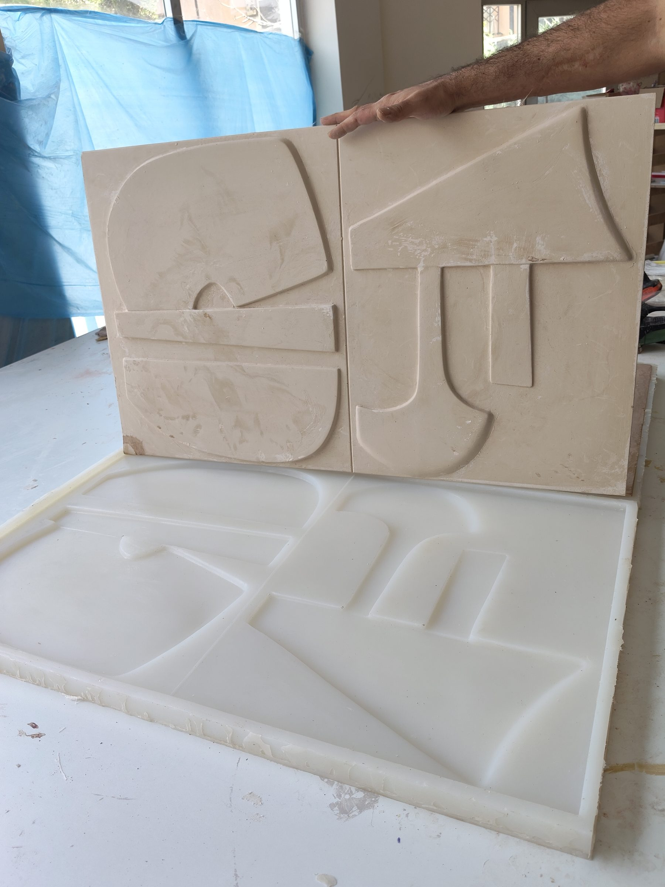
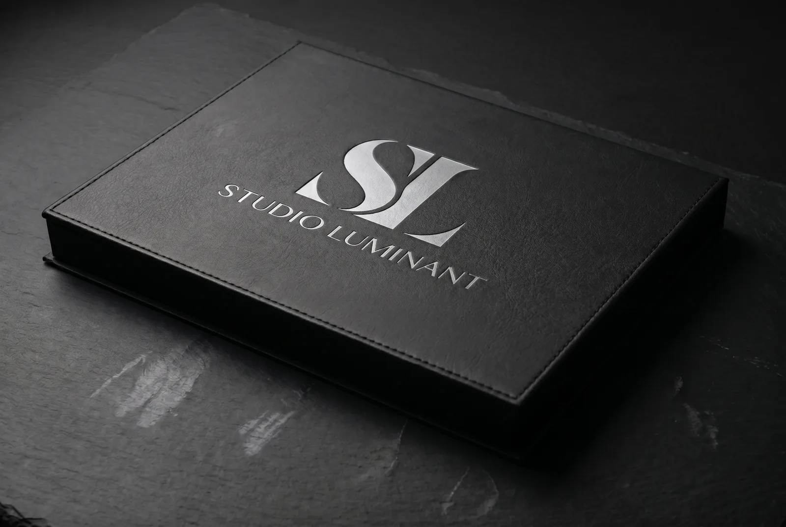

Tasarım sizin.
Döküm, çiziminize sadık.
Eskiz, ölçülü teknik çizim ya da referans görsel: her proje bunlardan biriyle başlar. Sapanca’daki atölyemizde önce rölyefin dijital modelini çıkarır, 3D baskıyla ana modeli, ondan da silikon kalıbı üretir ve paneli Lumina PMAG™ ile dökeriz.

Şartnameye girecek değerler.
Aşağıdakiler genel ürün verileridir; projeye özgü değerler, o projenin teknik veri sayfasında yer alır.
Lumina PMAG™
- Format
- 3000 × 1500 mm’ye kadar büyük format
- Bileşim
- Kütlece %95’in üzerinde mineral
- Nem
- Neme dayanıklı
Lumina PUCOMP™
- Kullanım
- Dış mekân ve ıslak hacimler için varyant
Proje
- Yüzey
- Artizan finish
- Belgeler
- Her proje için teknik veri sayfası ve montaj çizimi
- Teslim şekli
- Aksi kararlaştırılmadıkça EXW Sapanca
- Montaj
- Proje bazında, ayrı kalem olarak fiyatlandırılır
Onayladığınız yüzeyi dökeriz.
- 01
Çizim
Çizimi 3D bir rölyef modeline çeviririz. Bu aşamadaki değişiklikler dijital ortamda yapıldığı için kalıp ya da malzeme maliyeti doğurmaz.
- 02
Yalama ışıkta onay
Döküme geçmeden önce modeli alçak açılı yalama ışıkta render eder, görselleri onayınıza sunarız; onayınız gelmeden döküme geçmeyiz.
- 03
Fiziksel numune
Üretime geçmeden önce onayladığınız modelden fiziksel bir numune dökeriz.
- 04
Belgeler
Projeye özel teknik veri sayfası ve montaj çizimi hazırlarız; şartname maddelerini ofisinizle birlikte netleştiririz.
Tek ana model, tek malzeme.
Rölyef tek bir dijital ana modelde tutulur. Aynı motif duvar panelinden kolon kaplamasına kesintisiz sürer; hepsi Lumina PMAG™ ile dökülür. Silikon kalıp esnek olduğundan, rijit bir kalıbın içinde kilitlenecek ters açıları da panele aktarır.
Lumina PMAG™
Büyük formatlı duvar ve tavan panelleri, asma tavan geçişleri, kolon kaplamaları, tezgâh ve masa önleri, vurgu yüzeyleri ve koridor yüzeyleri için. Kesim artıkları yeni dökümlere geri katılır.
Dış mekân ve ıslak hacimler için aynı tasarım Lumina PUCOMP™ ile dökülür.
Artizan finish
- Boyaya hazır
- Renk ve parlaklık, projenin boya şartnamesine göre sahada uygulanır.
- Derin mat
- Panel, döküm hâlindeki görünümünü korur. Kuru iç mekânlar için.
- Mat
- Otel lobileri, koridorlar ve sık dokunulan ortak alanlar gibi yoğun kullanılan yüzeyler için.
- Su sıçramasına dayanıklı
- Su sıçrayan alanlar: yiyecek-içecek servis duvarları, spa ve ıslak hacimler.
Her aşama tek çatı altında.
Ana modelden artizan finish’e kadar her aşama Sapanca’daki atölyemizde yapılır.
- 013D baskı ana model
- 02Silikon kalıp üretimi
- 03Vakum döküm
- 04Büyük format döküm
- 05Artizan finish
Yüzeyi ofisinizin ışığında görün.
Kutuda Lumina PMAG™ ile dökülmüş, artizan finish uygulanmış numuneler bulunur. Rölyefi, yüzeyi ve rengi ekranda değil, elinizde değerlendirebilirsiniz.
Numune kutusu isteyin